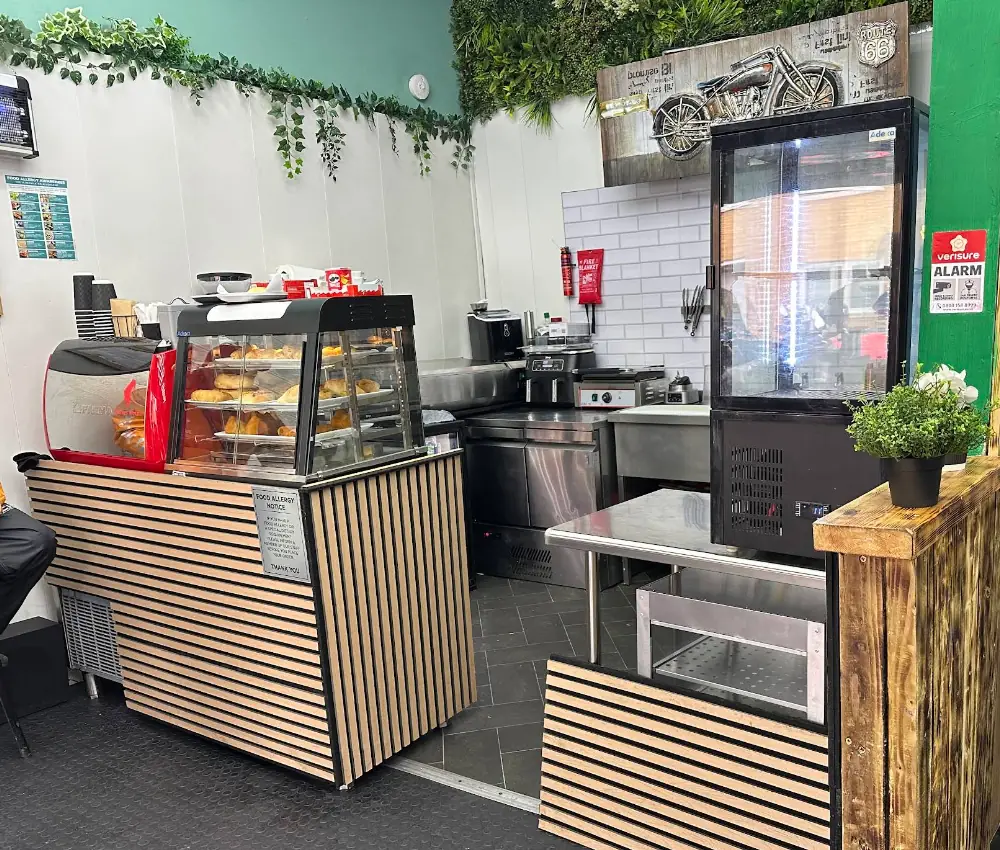
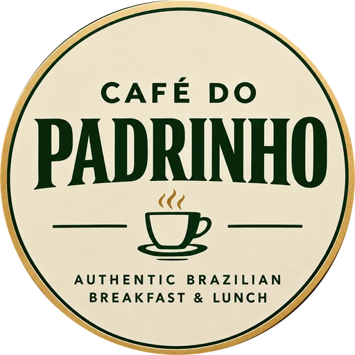
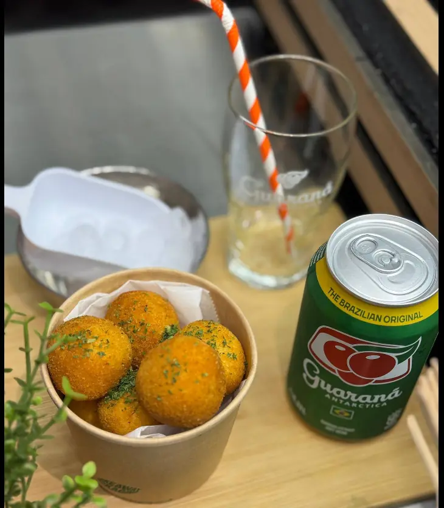
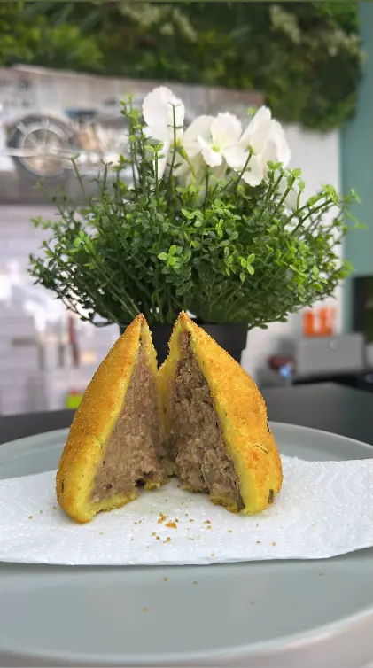
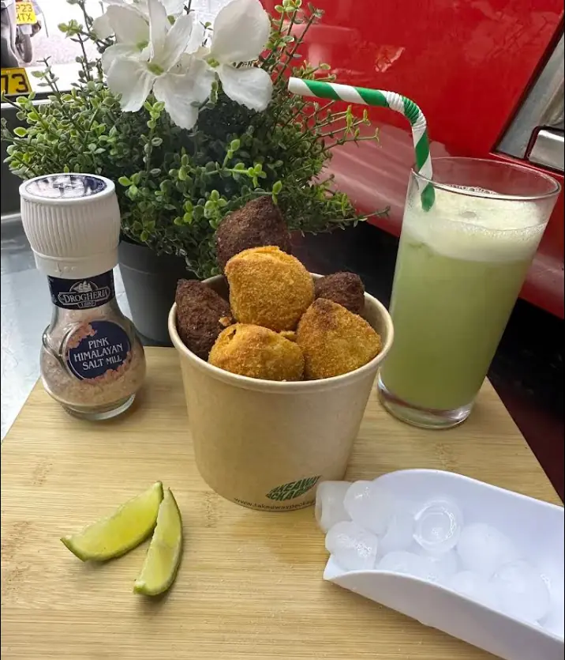
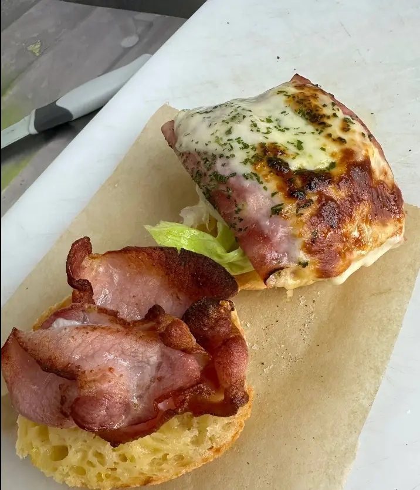
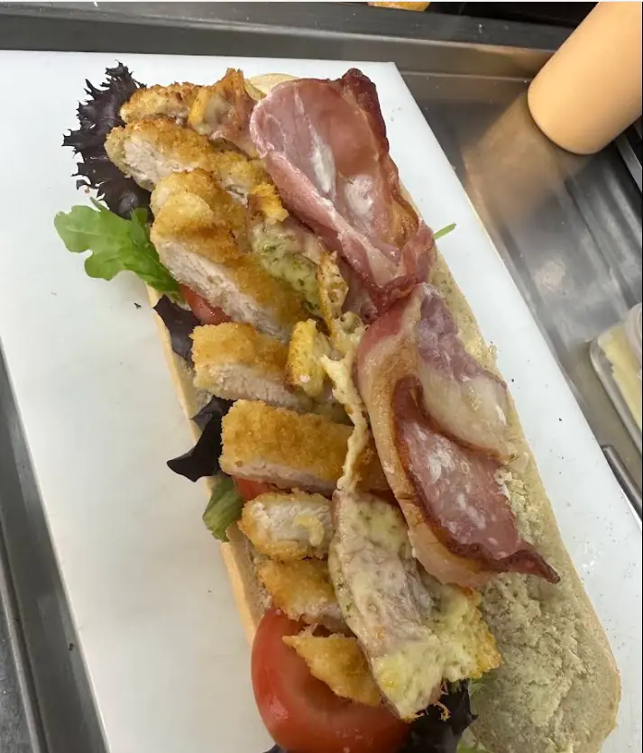
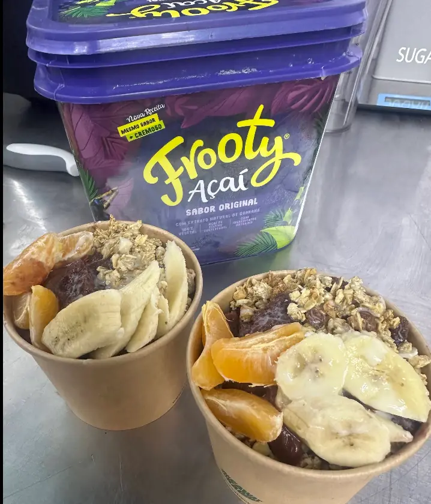
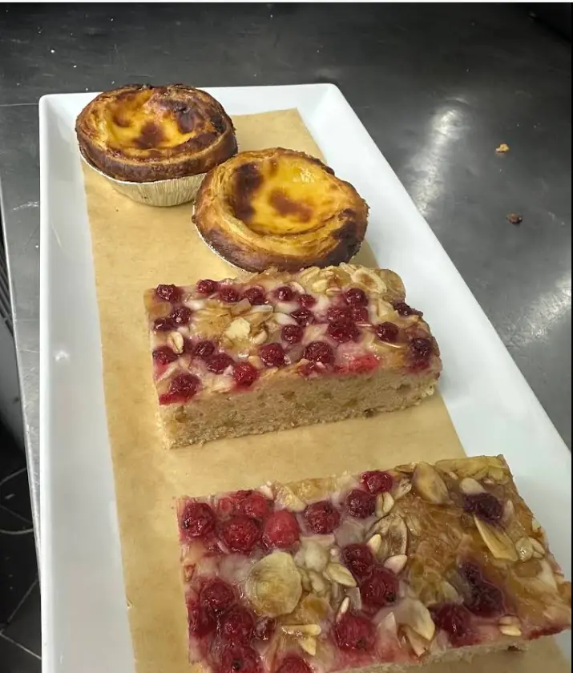

Café do Padrinho: Sabor de casa, no meio de Londres.
Café, salgados e pratos brasileiros servidos com o jeito de casa. Café da manhã e almoço, de segunda a sábado, na Wandsworth Road.
472 Wandsworth Rd, Nine Elms, LondonUm pedacinho do Brasil em Londres.
Tem lugar que a gente reconhece antes mesmo de ler a placa. No Café do Padrinho, o café da manhã e o almoço têm sotaque brasileiro: salgado na vitrine, açaí na tigela, café na xícara e conversa no balcão.
Para quem mora longe de casa, é um reencontro. Para quem ainda não conhece o Brasil, é um bom começo.

O Brasil cabe numa xícara.
Quatro coisas que você encontra por aqui, em qualquer dia da semana.
Café
Uma pausa sem pressa, do primeiro gole da manhã ao café da tarde.
Brasil
Sabores que lembram casa, servidos do jeito que a gente conhece.
Encontros
Um balcão para conversar, um lugar para esperar o pedido e um motivo para voltar.
Londres
Na Wandsworth Road, no meio do dia a dia de uma das cidades mais vibrantes do mundo.


Para qualquer hora do dia.
Do pão de queijo da manhã ao doce que acompanha o café da tarde.
- Salgados Pão de queijo, bauru e vários tipos de salgados. (abre o cardápio em nova aba)
-

Café da manhã Para começar o dia antes de encarar Londres. (abre o cardápio em nova aba) -

Lanches Feitos na hora, com salada, queijo e bacon. (abre o cardápio em nova aba) -

Açaí Açaí brasileiro na tigela, com fruta e granola. (abre o cardápio em nova aba) -

Doces e café Pastéis de nata, bolos e lattes cremosos. (abre o cardápio em nova aba)
Itens, preços e disponibilidade do dia estão sempre atualizados no cardápio oficial.
Quem passa, volta.
Passo lá quase todo dia, top demais… sempre pego pão de queijo ou bauru, mas tem vários tipos de salgados e lanche que ele faz na hora com salada, queijo e bacon… recomendo… bom demais.
Excelentes no que fazem! Sempre que vou, o sorriso e a alegria deles são contagiantes. Recomendo demais o pão de queijo e também o almoço — realmente fazem tudo com muito prazer.
Que lugar adorável e acolhedor! Eles têm ótimas opções para viagem, como sanduíches frescos (inclusive vegetarianos), lattes cremosos, sucos naturais, pão de queijo e até açaí autêntico brasileiro. Tudo tem um sabor fresco e caseiro, definitivamente um lugar que vale a pena visitar!
Da vitrine para a mesa.
Fotos do Café do Padrinho: o espaço, o café e o que sai da cozinha.
Siga o Café do Padrinho
@cafedopadrinholondonPrato do dia, novidades da vitrine e o que está saindo da cozinha aparecem primeiro por lá.
Ver no InstagramVenha nos visitar.
472 Wandsworth RdNine Elms
London SW8 3EB
United Kingdom
Horários
Confira os horários
Horário de Londres. Em feriados, confirme pelo Instagram ou por telefone.
Seu próximo café em Londres pode ter sabor de Brasil.
Passe no balcão, peça pelo cardápio online ou ligue para a gente.